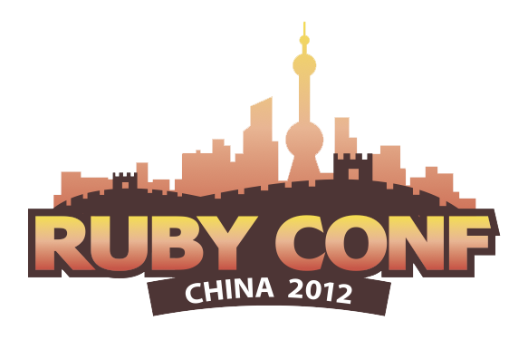
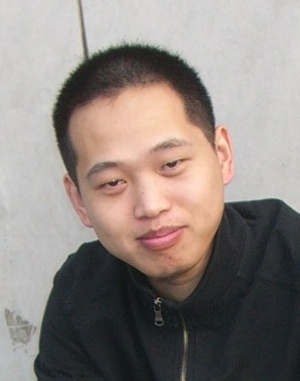
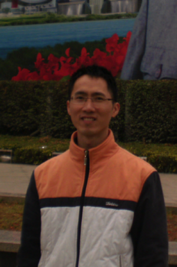
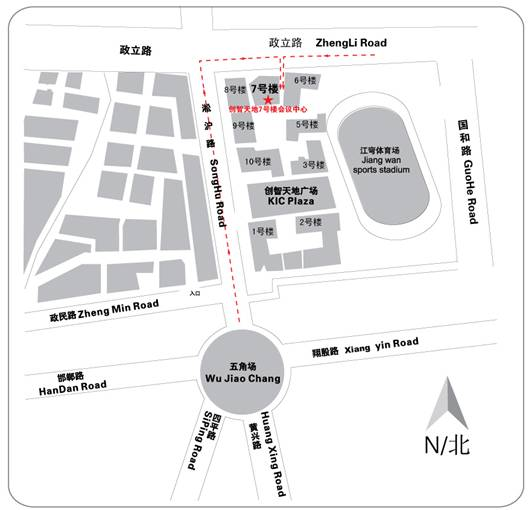
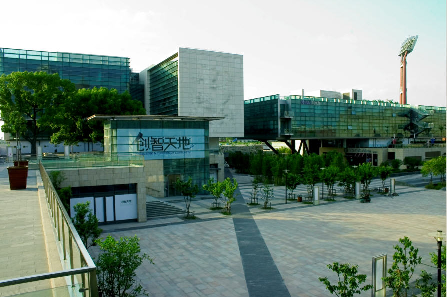

RubyConfChina 大会是一个为期两天的技术大会，由 Ruby China 和 TopGeek 社区共同发起。本年度会议将在是国内最高水平的 Ruby 大会，本次大会邀请到 Ruby 语言之父松本行弘先生，以及国内最顶尖的 Ruby 开发高手和大批的 Ruby 开发人才，并帮助国内使用 Ruby 技术的公司宣传，推广，并跟全球 Ruby 社区建立良好关系。

2012 第四届中国 Ruby 大会
11月16日 - 11月17日 上海杨浦区创智天地
大会介绍
演讲嘉宾

演讲嘉宾：松本行弘（matz）
演讲主题：Ruby 2.0
松本行弘（matz）是Ruby语言的发明人，他在1993年发布了Ruby语言的第一个版本，随后ruby语言逐渐在日本流行起来。
2000年，Dave Thomas出版了《Programming Ruby》一书，首次将这个发源于日本的动态编程语言介绍到了英文社区，Ruby开始在全球范围内流行。2004年，丹麦人DHH用ruby编写了Web快速开发框架Ruby on Rails，彻底掀起了Ruby语言的热潮。
演讲嘉宾：Fred Wu
演讲主题：如何通过努力和一些小聪明，成为一个更优秀的（ruby）程序员
Fred Wu是一位对开源社区充满热情的程序员——为 Rails 等多个开源项目做过些许的贡献。出生和成长于上海，从13岁开始接触到并爱上了计算机与网络，从计算机杂志上“认识”了 HTML，萌发了对网络的憧憬。经过中学阶段对网络的痴迷到最终选择了互联网程序开发作为职业。Fred Wu毕业于澳大利亚墨尔本的 Monash 大学，就读于信息技术与系统（多媒体）专业。曾经在 Envato, PlayUp 和 SitePoint 等公司就职，目前在 Locomote 带领技术团队。
演讲嘉宾：Yi-Ting Cheng
Yi-Ting Cheng (a.k.a xdite) is a web developer, Ruby on Rails specialist and popular blogger/entrepreneur in Taiwan, the author of beginner turtorial : "Rails 101" (http://rails-101.logdown.com).
Xdite has very deep knowledge of the full-stack website development & web operation, know to implement exciting idea in a amazingly short amount of time. Now her run a Rails consultant company living in Taiwan.

演讲嘉宾：蔡望勤
蔡望勤是China on Rails（chinaonrails.com）的创始人。2005年加入当时中国最大的社交网络平台UUZone，从此专注互联网应用研发。2007年赴北京参与创建时尚社交网络公司P1.cn，并担任首席技术官。现居深圳，任易皆能科技(深圳)有限公司云服务研发总监。
演讲嘉宾：黄智敏
GREE资深工程师，负责OpenFeint平台的基础设施，技术架构和服务器端性能优化。

演讲嘉宾：马海波
04年毕业在珠海做Java开发，07年在深圳某公司任开发部经理，08年改用Ruby，11年开始创业，做开源电子商务平台ShopQi。
演讲嘉宾：太檑
独立软件开发工程师，Pragmatic.ly 联合创始人， Railscasts-china 创始人，开源狂热者。
演讲嘉宾：叶玎玎
Open source enthusiast. Co-founder of Pragmatic.ly, last worked at Intridea as the software architect and chief developer on Presently and Socialspring products.
演讲嘉宾：Saito Wu
#cqupt #伪geek #伪otaku #programmer btw:f_ck GFW.
大会日程
会场信息
- 大会地点：上海杨浦区淞沪路290号创智天地广场7号楼会议中心，近政立路
- 地铁：十号线五角场站，步行五分钟即到
- 自驾：园区内设有停车位
大会地图
创智天地实景图
Google Map
赞助单位


联系我们
RubyChina社区组织
Ruby China Group 是一个非营利组织，它旨在为中国的 Ruby 和 Rails 爱好者提供一个自由，开放的交流平台。目前这里已经是国内最权威的 Ruby 社区，拥有国内所有资深的 Ruby 工程师。
- 网址：http://ruby-china.org
- 组织者：吕国宁 admin@ruby-china.org
- 组织者：李华顺 huacnlee@gmail.com
TopGeek 顶尖极客沙龙
TopGeek 是面向技术极客的组织，定期举办线下活动，讨论软件和互联网的一些新的技术潮流，开发理念和经验。 这个组织不以语言或行业划分圈子，打破技术分割，开拓大家思路，促进互相学习，实现资源共享。解决一些成熟技术人员进一步发展的共同问题，促进交流和发展。口号："一日为极客，终身为极客！"
- 组织博客：http://topgeek.org
- 新浪微博：http://weibo.com/topgeek
- 组织者：陈世欣 stingchen@topgeek.org